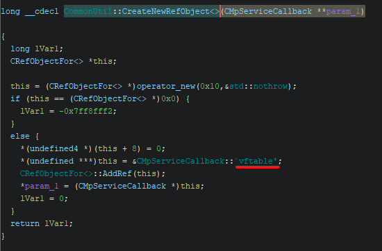

1.1 MpDefenderCoreService
Overview
General Information
| Type | Information |
|---|---|
| File Size | 1.35 MiB |
| Operating System | NT Windows 10 x64 (AMD64) GUI |
| Executable Type | PE (.exe) |
| Built-By | Visual Studio 2022 (v17.6) |
| Language | ASM/C/C++ |
| File Version (MS) | 4.18 |
| File Version (LS) | 23110.3 |
| Product Version (MS) | 4.18 |
| Product Version (LS) | 23110.3 |
Used Tools
| Type | Info |
|---|---|
| Compiler | MASM(14.00.32595) |
| Compiler | Universal Tuple Compiler(19.00.32595)[C] |
| Compiler | Universal Tuple Compiler(19.00.32595)[C++] |
| Compiler | Universal Tuple Compiler(19.00.32595)[LTCG/C++] |
| Tool | CVTRES(14.00.32595) |
| Linker | Microsoft linker(14.00.32595) |
File Hashes
| Type | Hash |
|---|---|
| MD4 | 628cecce6ccb7aa876bdfc233b843e0e |
| MD5 | 87cd7323bd51141f93d41303ee9bf37d |
| SHA1 | d5f4923d713ff84dc515782aa66349b4dbbfd449 |
| SHA224 | 707da5d138bb02a1ce35f0140c06355ebd4197dd77323bdd1f95d05f |
| SHA256 | 57c2898168bd85133d0a3476252d3329c93a0eac0ff68587e25069a05aaf78d0 |
| SHA384 | 3724d4db39009cd94d8a900a5ca9dff118154576635d7515f23d9a36a2d296e621ba00a3015770e16cc6e11c417cf86c |
| SHA512 | da8fae23ad0de8fc1a4a8517e97c36c76edfd7fec4d8ba40671d7a93fdd24bb7817dc857a146a1fbf6cf5b2f406d158b4557fe727414113d9179df64cb7f5ea2 |
Entropy
81% Not Packed (6.50546)
| Offset | Size | Entropy | Status | Name |
|---|---|---|---|---|
| 0000000000000000 | 0000000000001000 | 0.88408 | not packed | PE Header |
| 0000000000001000 | 0000000000105000 | 6.46721 | not packed | Section(0)['.text'] |
| 0000000000106000 | 000000000003d000 | 5.56160 | not packed | Section(1)['.rdata'] |
| 0000000000143000 | 0000000000004000 | 3.70628 | not packed | Section(2)['.data'] |
| 0000000000147000 | 000000000000b000 | 5.83020 | not packed | Section(3)['.pdata'] |
| 0000000000152000 | 0000000000001000 | 2.86989 | not packed | Section(4)['.rsrc'] |
| 0000000000153000 | 0000000000002000 | 5.31355 | not packed | Section(5)['.reloc'] |
| 0000000000155000 | 00000000000055f0 | 7.76089 | packed | Overlay |
Decompile
Locating vftable
entry → __scrt_common_main_seh → wmain → HrExeMain → ServiceCrtMain → CommonUtil::CreateNewRefObject<>

Recovering vftable
RecoverClassesFromRTTIScript.java
RecoverClassesFromRTTIScript.java> Running...
Checking for missing RTTI information and undefined constructor/destructor functions and creating if possible to find entry point...
Recovering classes using RTTI...
Identified 138 classes to process and 300 class member functions to assign.
See Bookmark Manager for a list of functions by type.
Total number of constructors: 56
Total number of inlined constructors: 0
Total number of destructors: 12
Total number of inlined destructors: 0
Total number of virtual functions: 619
Total number of virtual functions that are deleting destructors: 0
Total number of virtual functions that are clone functions: 0
Total number of virtual functions that are vbase_destructors: 0
Total number of indetermined constructor/destructors: 226
Total fixed incorrect FID functions: 0
Total resolved functions that had multiple FID possiblities: 0
Total fixed functions that had incorrect data types due to incorrect FID: 0
RecoverClassesFromRTTIScript.java> Finished!
Before:
After:
MpDefenderCoreService.exe has been confirmed to most likely use inline assembly. Therefore, decompilation can no longer be trusted: * Compilation optimization has been confirmed * During analysis, the number of function parameters does not match * Some functions have no parameters when called but receive parameters internally
Identifying Defender Components
Below is the decompiled main service initialization routine code using ChatGPT. The code related to Asimov is most likely garbage (as can be seen in all functions):
void InitializeSensors()
{
for (int i = 0; i < 5; ++i)
{
const size_t stateOffset = i * 0x20;
HRESULT hr = E_FAIL;
// vftable-based factory (sensor / config manager creation)
if (g_ConfigManagerFactories[i])
{
hr = reinterpret_cast<HRESULT>(
g_ConfigManagerFactories[i]()
);
}
// [WPP Branch - General ETW Trace]
if (FAILED(hr))
{
// [Asimov Branch - Feedback Telemetry]
// WatchDog / 1DS failure reporting
MpWatchDog::Wd1dsMessage msg(
L"MdCoreSvcSensorInitFailure"
);
msg.AddAttribute(
L"ModuleName",
gs_Modules[i]
);
msg.AddAttribute(
L"HRESULT",
hr
);
msg.Send();
// [WPP Branch - Error-level ETW Trace]
// Mark sensor as failed
DAT_140143268[stateOffset] &= ~1;
}
else
{
// Mark sensor as initialized
DAT_140143268[stateOffset] |= 1;
}
// Memory ordering / side-effect barrier
MemoryBarrier();
// Global stop / abort flag
if (DAT_140149b10 > 0)
break;
// Service Control Manager heartbeat
HrReportStatusToSCM(SERVICE_START_PENDING);
}
}
The analysis with IDA revealed that it executes five initialization functions:
.data:0000000140143250 ?gs_Modules@@3PAU_WATCHDOG_MODULE@@A
// "WdConfigManager"
MpWatchDog::WdConfigManagerInitialize(void)
MpWatchDog::WdConfigManagerCleanup(void)
// "WdAnomalyDetector"
MpWatchDog::WdAnomalyDetectorInitialize(void)
MpWatchDog::WdAnomalyDetectorCleanup(void)
// "WdEcsSensor"
MpWatchDog::WdEcsSensorInitialize(void)
MpWatchDog::WdEcsSensorCleanup(void)
// "1dsManager"
MpWatchDog::Wd1dsInitialize(void)
MpWatchDog::Wd1dsCleanup(void)
// "MpWatchDogTimer"
MpWatchDogTimerInitialize(void)
MpWatchDogTimerCleanup(void)
Windows Defender Configuration Manager, Windows Defender Anomaly Detector, Windows Defender ECS Sensor, and a Timer are each initialized.